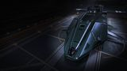

Макс. скорость / с форсажем
182 / 304 м/с
Боевой корабль Федерациис самым низким порогом по рангу: пять оружейных креплений, два военных отсека и 540 единиц базовой брони примерно за 13.5 млн кр. Щиты слабые, разворачивается он тяжело, зато корпус хорошо держит удары, а страховка недорогая. На нём можно недорого набирать ранг во флоте Федерации на пути к FAS, Gunship и в итоге к Corvette.

Корабль получает оценку пригодности от 1 до 100 в полностью улучшенной сборке для этой роли, в сравнении со всеми другими кораблями той же роли. См. методику оценки кораблей.
Federal Dropship — военный транспорт Core Dynamics, переделанный в лёгкую канонерку. Это первый боевой корабль, который заслуживают пилоты Федерации, и основа для FAS и Gunship . Пять оружейных креплений (одно большое и четыре средних), два военных отсека и 540 единиц базовой брони дают приличную огневую мощь и хорошую защиту за небольшие деньги.
Изящества от него не ждите: он медлителен, тяжело разворачивается и имеет слабый базовый щит. Зато это с большим отрывом самый дешёвый федеральный боевой корпус; для покупки нужен лишь самый низкий федеральный ранг. Живучести хватает, чтобы успешно сражаться и продвигаться к FAS, Gunship и в итоге к Corvette. Это достойный выбор для начала карьеры и набора ранга без больших затрат.
Первые бои в зонах конфликтов и местах добычи ресурсов, задания на уничтожение пиратов и начальный этап набора ранга в Федерации. Прочный и доступный военный корабль, который справляется без излишеств.
В бою Dropship определяют четыре особенности:
Корабль медленный, неповоротливый и с самым слабым базовым щитом из тройки кораблей Федерации. Он плохо навязывает дистанцию, уклоняется и держит удар щитом, а по урону в секунду уступает более дорогим средним кораблям. FAS быстрее и лучше подходит для наступления, а Gunship бьёт намного сильнее. Преимущества Dropship — цена и доступность. Это корабль для начала карьеры, а не навсегда.
Пять орудий, 540 единиц тяжёлой брони и вместительные отсеки для усилений при самых низких федеральных затратах и требованиях к рангу работают на его пользу. Но тяжёлая управляемость и самый слабый щит в тройке ограничивают оценку до 76.
Итоговая 76/100 основана на приоритетных критериях боевой роли. У каждого критерия есть вес (доля от 100); корабль получает часть баллов по сравнению со всеми соперниками. В сумме они дают итоговую оценку.
| Критерий | Баллы | Почему столько |
|---|---|---|
| Оружейные точки | 26/30 | Пять креплений — одно большое и четыре средних — дают полноценную батарею за эти деньги и больше орудий, чем можно подумать. Однако крепления среднего размера и меньше ограничивают чистый урон в секунду, и он уступает дорогим средним кораблям вроде FAS (2L 2M) и Gunship (1L 4M 2S). |
| Распределитель энергии | 8/10 | После перехода на класс A энергораспределителя класса 6 хватает на пять орудий и форсаж. Он уступает распределителю класса 7 на Gunship, поэтому лучше улучшить его рано: пять орудий и форсаж быстро исчерпывают запас. |
| Щит | 9/15 | Всего ~104 МДж базового щита, меньше всего в тройке федеральных кораблей. Даже после улучшения двухконтурного щита примерно до ~450 МДж он остаётся восстанавливаемым буфером, а не основной защитой. Держать огонь только щитом он не может. |
| Броня и отсеки | 14/15 | 540 единиц тяжёлой базовой брони, два военных отсека класса 4 и восемь дополнительных (6·5·5·4·3·3·2·1) дают примерно 3,000+ эффективной брони после улучшений. Места под усиления больше, чем у FAS и Gunship. Это главное достоинство корабля. |
| Манёвренность | 11/20 | 182/304 м/с и тяжёлый разворот при массе корпуса 580 т делают его самым медленным и неповоротливым среди средних боевых кораблей. Он не может навязывать дистанцию или уклоняться, побеждая только на истощение. Это его главное ограничение. |
| Вспомогательные модули и гибкость | 8/10 | На четырёх внешних креплениях свободно помещаются два усилителя щита, дипольные отражатели и теплоотводная катапульта. Этого достаточно для слабого щита и сброса жара через «Отвод тепла», и модули не конкурируют за место. |
| Взвешенный итог | 76/100 | Совпадает с итоговой оценкой пригодности корабля для этой роли. |
Вес каждого критерия отражает редакционную расстановку приоритетов роли, а не формулу игры. Длина полосы показывает, какую долю баллов по критерию заработал корабль. Длинные полосы дали основную часть оценки, короткие показывают, где он потерял баллы. См. методику оценки кораблей.
Во всех таблицах корабли оцениваются именно для бояи разделены по размеру посадочной площадки. Столбец Оружейные точки показывает набор орудийных гнёзд, от которого зависит вооружение. Оценка пригодности от 1 до 100 такая же, как на остальных страницах.
| Корабль | Класс | Оружейные точки | Плюсы и минусы | Оценка |
|---|---|---|---|---|
| Fer-de-Lance | Средняя | 1H 4M | Выше оценка; манёвренность; орудийные гнёздаБроня | 93 |
| Krait Mk II | Средняя | 3L 2M | Выше оценка; орудийные гнёзда; броняРаспределитель энергии | 90 |
| Python Mk II | Средняя | 4L 2M | Выше оценка; орудийные гнёзда; распределительБроня | 90 |
| Mamba | Средняя | 1H 2L 2S | Выше оценка; распределитель; орудийные гнёздаБроня | 89 |
| Корабль Alliance Chieftain | Средняя | 2L 1M 3S | Оценка выше; манёвренность; броняЩит | 88 |
| Корабль Alliance Challenger | Средняя | 1L 3M 3S | Оценка выше; броня; щитМанёвренность | 86 |
| Corsair | Средняя | 3L 3M | Оценка выше; распределитель; гибкостьМанёвренность | 85 |
| Federal Assault Ship | Средняя | 2L 2M | Оценка выше; распределитель; манёвренностьЩит | 84 |
| Python | Средняя | 3L 2M | Оценка выше; распределитель; гибкостьМанёвренность | 83 |
| Federal Gunship | Средняя | 1L 4M 2S | Оценка выше; распределитель; броняМанёвренность | 82 |
| Корабль Alliance Crusader | Средняя | 1L 2M 3S | Оценка выше; распределитель; броняМанёвренность | 80 |
| Federal Dropship этот | Средняя | 1L 4M | — этот корабль (для сравнения) | 76 |
| Krait Phantom | Средняя | 2L 2M | Гибкость; манёвренностьНиже оценка; броня | 74 |
В рейтинге 13 средних боевых кораблей. Лидер — Fer-de-Lance (93). Все эти соперники используют те же площадки, так что это прямые альтернативы.
| Корабль | Класс | Оружейные точки | Плюсы и минусы | Оценка |
|---|---|---|---|---|
| Federal Corvette | Большая | 2H 1L 2M 2S | Выше оценка; орудийные гнёзда; распределительЩит | 98 |
| Imperial Cutter | Большая | 1H 2L 4M | Выше оценка; распределитель; щитМанёвренность | 91 |
| Anaconda | Большая | 1H 3L 2M 2S | Выше оценка; распределитель; щитМанёвренность | 88 |
| Imperial Clipper | Большая | 2L 2M | Оценка выше; манёвренность; распределительОружейные точки | 79 |
| Type-10 Defender | Большая | 4L 3M 2S | Выше оценка; орудийные гнёзда; броняМанёвренность | 78 |
Оценку получили 5 больших боевых кораблей. Лидер — Federal Corvette (98). У них лучше показатели, но нужны большие площадки и бюджет.
| Корабль | Класс | Оружейные точки | Плюсы и минусы | Оценка |
|---|---|---|---|---|
| Kestrel Mk II | Малая | 3L 2S | Оценка выше; крепления; гибкостьБроня | 85 |
| Vulture | Малая | 2L | Оценка выше; манёвренность; щитБроня | 80 |
| Корабль Cobra Mk V | Малая | 3M 2S | Оценка выше; гибкость; крепленияРаспределитель энергии | 78 |
| Imperial Courier | Малая | 3 млн | Манёвренность; щитНиже оценка; броня | 70 |
| Viper Mk IV | Малая | 2M 2S | Броня; распределительОценка ниже; манёвренность | 66 |
| кораблю Diamondback Explorer | Малая | 1L 2M | Гибкость; манёвренностьНиже оценка; броня | 65 |
| Viper Mk III | Малая | 2M 2S | Манёвренность; точки подвескиНиже оценка; броня | 63 |
| Diamondback Scout | Малая | 2M 2S | Гибкость; броняНиже оценка; щит | 60 |
| Корабль Cobra Mk III | Малая | 2M 2S | Манёвренность; распределительНиже оценка; щит | 58 |
| Eagle Mk II | Малая | 3S | Манёвренность; точки подвескиНиже оценка; щит | 55 |
| Imperial Eagle | Малая | 1M 2S | Манёвренность; точки подвескиОценка ниже; гибкость | 54 |
| Корабль Cobra Mk IV | Малая | 2M 3S | Точки подвески; броняОценка ниже; манёвренность | 44 |
| Sidewinder Mk I | Малая | 2 малых | Манёвренность; гибкостьНиже оценка; орудийные гнёзда | 40 |
Оценены 13 малых боевых кораблей; лидирует Kestrel Mk II (85). Они дешевле, садятся на меньшие площадки и уступают по цифрам, но это другой класс.
Примерно за 13.5 млн кр. Dropship — самый дешёвый федеральный боевой корпус, для покупки которого нужен лишь низкий ранг мичмана. Инженерные улучшения обходятся умеренно. Поскольку корабль нужен для набора ранга, обычно достаточно оснастить его для успешных боёв, не доводя до максимума.
Потратьтесь на основные модули и двухконтурный щит как буфер. Главное достоинство Dropship — за небольшие деньги выигрывать бои, которые повышают федеральный ранг.
Сборка без излишеств для ближнего боя с упором на броню; задействованы оба военных отсека. Начальная сборка требует только покупок, класс A даёт основу для боевой службы, а инженерный вариант развивает стандартную боевую схему с упором на корпус из-за слабого щита.
| Отсек | Начальная · только покупка | Класс A · без улучшений | С инженерными улучшениями | Примечания |
|---|---|---|---|---|
| Оружейные точки | ||||
| Большая 1 | 3C многоствольную пушку (на подвижном подвесе) | 3C многоствольную пушку (на подвижном подвесе) | G5 Форсирование + Коррозионные снаряды | На единственном большом креплении стоит оснащённая «Коррозионным снарядом» многоствольная пушка, которая снижает сопротивление брони огню всей батареи. |
| Средняя 1 | 2F импульсный лазер (на подвижном подвесе) | 2D лучевой лазер (на подвижном подвесе) | G5 Эффективный + «Отвод тепла» | Купите недорогой импульсный лазер, а при переходе на класс A замените его лучевым с «Отводом тепла», чтобы снимать щиты без нагрева. |
| Средняя 2 | 2F многоствольную пушку (на подвижном подвесе) | 2F многоствольную пушку (на подвижном подвесе) | G5 Форсирование + Автозарядка | Средняя на подвижном подвесе многоствольная пушка; автозаряжание поддерживает непрерывный урон в секунду. |
| Среднее 3 | 2F многоствольную пушку (на подвижном подвесе) | 2F многоствольную пушку (на подвижном подвесе) | G5 Форсирование + Автозарядка | Второе среднее орудие: многоствольная пушка; автозарядка убирает паузы на перезарядку, чтобы кинетическая батарея стреляла непрерывно. |
| Среднее 4 | 2F импульсный лазер (на подвижном подвесе) | 2F импульсный лазер (на подвижном подвесе) | G5 Эффективный + Фазовая последовательность | Эффективный импульсный лазер мало нагревается и понемногу повреждает корпус; «Фазовая последовательность» пропускает часть урона сквозь щит. |
| Внешние крепления | ||||
| Крепление 1 | 0A усилитель щита | 0A усилитель щита | G5 Усиленная конструкция + Суперконденсаторы | Первый усилитель щита; усиленная конструкция повышает запас МДж слабого двухконтурного щита там, где это особенно важно. |
| Крепление 2 | — | 0A усилитель щита | G5 Усиленная конструкция + Суперконденсаторы | Второй усилитель с усиленной конструкцией — самый дешёвый способ заметно укрепить слабый щит. |
| Крепление 3 | — | 0I Пусковая установка дипольных отражателей | G1 Увеличенный боезапас (без экспериментального эффекта) | Необязательно, низкий приоритет: увеличение боезапаса даёт больше залпов дипольных отражателей . Дипольные отражатели сбивают наведение подвижных и турельных орудий. |
| Крепление 4 | — | 0I Теплоотводная катапульта | G1 Увеличенный боезапас (без экспериментального эффекта) | Необязательно, низкий приоритет: увеличенный боезапас добавляет заряды теплоотвода. Сбрасывает тепло при скрытном ходе и помогает восстановить охлаждение «Тепловым отводом». |
| Основные модули | ||||
| Обшивка | Лёгкий сплав | Композит военного класса | G5 Усиленная конструкция + Дополнительное бронирование | |
| Силовая установка | 6E Силовая установка | 6A Силовая установка | G5 Форсирование + Распределение тепла | Питает пять орудий, щит и усиления. Перегрузка добавляет запас мощности, а «Рассеивание тепла» отводит лишний жар. |
| Маневровые двигатели | 6E Маневровые двигатели | 6A Маневровые двигатели | G5 Грязная настройка двигателей + Форсированные двигатели | Класс A + «Грязная настройка двигателей» возвращают столько подвижности, сколько позволяет тяжёлый корпус. |
| Рамочно-сместительный двигатель (FSD) | 5E Рамочно-сместительный двигатель (FSD) | 5A Рамочно-сместительный двигатель (FSD) | G3 Увеличенная дальность + Управление массой | Класс A, чтобы добираться до боёв и сдавать задания на ранг Федерации. Дальности G3 достаточно: боевому кораблю не нужны рекорды прыжка. |
| Система жизнеобеспечения | 5E Система жизнеобеспечения | 5D Система жизнеобеспечения | G5 Снижение массы (без экспериментального эффекта) | Класс D для экономии массы, Снижение массы дополнительно облегчает модуль; система жизнеобеспечения не имеет экспериментального эффекта. |
| Распределитель энергии | 6E Распределитель энергии | 6A Распределитель энергии | G5 Ускоренная зарядка + Сверхпроводящие каналы | Ставьте класс A как можно раньше: пять орудий и форсаж быстро высаживают распределитель класса 6. |
| Сенсоры | 4E Сенсоры | 4D Сенсоры | G5 Снижение массы (без экспериментального эффекта) | Понизьте до класса D и облегчите: лишняя дальность сенсоров в бою не нужна, зато масса меньше. |
| Топливный бак | 4C Топливный бак | 4C Топливный бак | (нет чертежа улучшения) | Штатный бак класса C; его ёмкость фиксирована, инженерных улучшений нет. |
| Военные отсеки | ||||
| Военный отсек 1 | 4E усилитель корпуса | 4D усилитель корпуса | G5 Усиленная конструкция + Дополнительное бронирование | «Усиленная конструкция» на модуле усиления корпуса в первом военном отсеке — самый дешёвый способ значительно увеличить эффективную броню. |
| Военный отсек 2 | — | 4D модулей | (нет чертежа улучшения) | модулей распределяет урон пробитий между внутренними модулями; не дорабатывается. |
| Дополнительные отсеки | ||||
| Размер 6 | 6E Генератор щита | 6C Генератор двухконтурного щита | G5 Усиленный + Быстрая зарядка | Двухконтурный щит быстро восстанавливается под огнём. «Усиленный» повышает запас МДж, а «Быстрая зарядка» ускоряет восстановление буфера. |
| Класс 5 | 5E Грузовой стеллаж | 5A Банк щита | G4 Специализированный + Регулировка потока | Необязательно, низкий приоритет: специализация снижает всплеск нагрева и потребления. Быстро восстанавливает щит в аварийной ситуации. |
| Класс 5 | — | 5D усилитель корпуса | G5 Усиленная конструкция + Дополнительное бронирование | Усиление корпуса бывает не больше 5-го размера, поэтому модуль 5D HRP полностью заполняет отсек и максимально повышает эффективную броню. |
| Класс 4 | — | 4D усилитель корпуса | G5 Усиленная конструкция + Дополнительное бронирование | Второй модуль с усиленной конструкцией: HRP . Прибавки брони складываются линейно: чем больше усилений, тем выше живучесть. |
| Класс 3 | — | 3A Банк щита | G4 Специализированный + Регулировка потока | Необязательно, низкий приоритет: специализация снижает всплеск нагрева и потребления. Быстро восстанавливает щит в аварийной ситуации. |
| Класс 3 | — | 3D модулей | (нет чертежа улучшения) | модулей защищает основные модули; инженерных улучшений нет. |
| Класс 2 | — | 2D модулей | (нет чертежа улучшения) | Дополнительная защита внутренних модулей, необходимых для полёта. Инженерных улучшений нет. |
| Класс 1 | — | 1D усилитель корпуса | G5 Усиленная конструкция (без экспериментального эффекта) | Необязательно, низкий приоритет. «Увеличенный радиус сканирования зондов» расширяет покрытие зондов. Картографирование планет даёт исследовательские данные. |
| Планировщики и экспорт | ||||
| Открыть в Coriolis | открыть | открыть | открыть | Открывает coriolis.io одним нажатием. |
| Открыть в EDSY | открыть | открыть | открыть | Открывает edsy.org одним нажатием. |
| Скопировать SLEF | Копирует исходный экспорт оснащения корабля (SLEF) для выбранного варианта. | |||
Щиты Dropship — самые слабые из тройки кораблей Федерации, поэтому его основная защита — броня. Заполните военные и несколько дополнительных отсеков усилениями с усиленной конструкцией. Двухконтурный щит используйте как восстанавливаемый буфер, а не как основную защиту.
Получите ранг мичмана, купите корпус (~13.5 млн кр.) и поставьте генератор щита класса E с одним усилителем щита. Затем установите усилитель корпуса в первый военный отсек.
Поставьте на большое крепление орудие на подвижном подвесе: многоствольная пушка , а затем распределите ещё две многоствольные пушки и два импульсных лазера по четырём средним креплениям.
Пока оставьте штатную обшивку: Лёгкий сплав . Военный композит поставите при переходе на класс A. До того момента оставьте пустыми второй военный отсек, три свободных внешних крепления и более вместительные дополнительные отсеки. Даже с заводскими элементы обшивки корпус достаточно хорошо держит удар, чтобы недорого выигрывать бои и набирать ранг.
Порядок перехода на класс A для недорогой сборки с упором на броню:
Не обязательно доводить Dropship до максимума. Обшивки военного класса, основных модулей класса A, двухконтурного щита и нескольких усилений хватит для побед, повышающих федеральный ранг. Дорогие инженерные улучшения лучше оставить для Corvette , к которому вы идёте.
Стандартная боевая схема с упором на корпус: щит слабый. Закрепите чертежи для дистанционных улучшений G1→G5; для экспериментальных эффектов нужно наведаться к инженерам лично.
Небольшие или умеренные затраты: стандартные боевые улучшения G5 и усиления корпуса с усиленной конструкцией. Корабль для набора ранга редко нуждается в полной инженерной доводке. Если запасы полны, остаётся потратить их, а не собирать. При необходимости уточните точный расход по каждому чертежу.
Примерный рост характеристик для трёх вариантов (ориентировочные значения, не точные результаты улучшений):
| Показатель | Начальная | Класс A | С инженерными улучшениями |
|---|---|---|---|
| Макс. скорость с форсажем | 304 m/s | 304 m/s | ~370 m/s |
| Эффективная броня | 540 | ~1,500 | ~3,000+ |
| Щит (МДж) | ~150 | ~210 | ~450 |
| Урон в секунду при длительном огне | средний | выше среднего | выше среднего |
| Выгодность | высокая | высокая | высокая |
При переходе с начальной сборки на класс A главную разницу дают обшивка из композита военного класса и большой запас усилений корпуса : даже без инженерных улучшений эффективная броня примерно утраивается. Инженерия доводит её до тысяч единиц, даёт рабочий щит-буфер и два накопителя с «Термоблоком» для быстрого восстановления без сильного нагрева. Бывший транспорт становится по-настоящему живучей канонеркой для набора ранга. Он останется медленным и неприметным, но будет выживать, а для этой задачи большего не нужно.
Подойдёт любая зона конфликтов на стороне Федерации или опасное место добычи ресурсов. Выбирайте федеральные системы, чтобы боевые облигации помогали повышать федеральный ранг. Вся карьера Dropship — это федеральный путь к Corvette.
Итог: Federal Dropship — рабочая лошадка федеральной боевой линейки: дешёвый, крепкий и доступный, хотя и медленный и неприметный. Он не поражает воображение, но именно с него начинается федеральный путь. Этот доступный и живучий корабль ближнего боя помогает набирать ранг, чтобы открыть FAS, Gunship и в итоге Corvette. Первая ступень, зато надёжная.
Данные на странице сверены с источниками ниже.